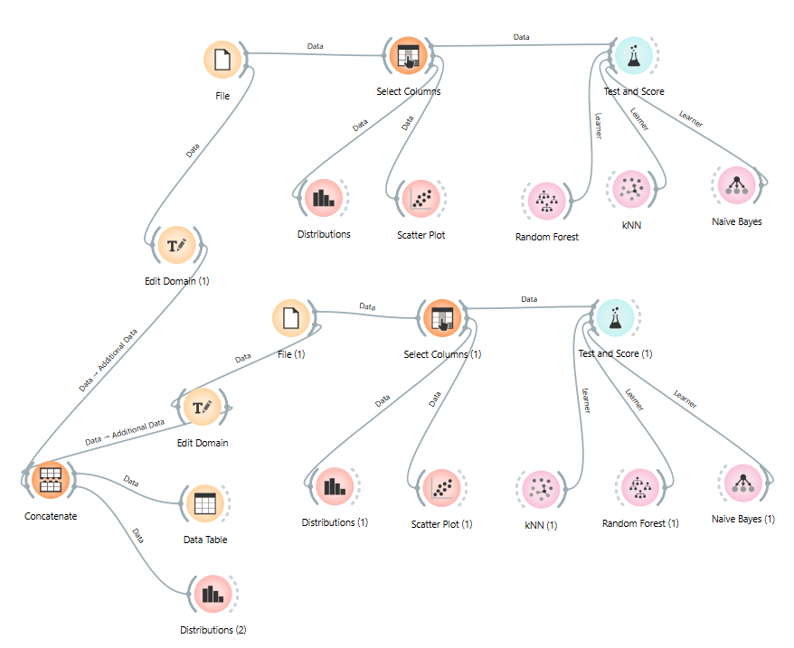
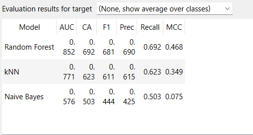
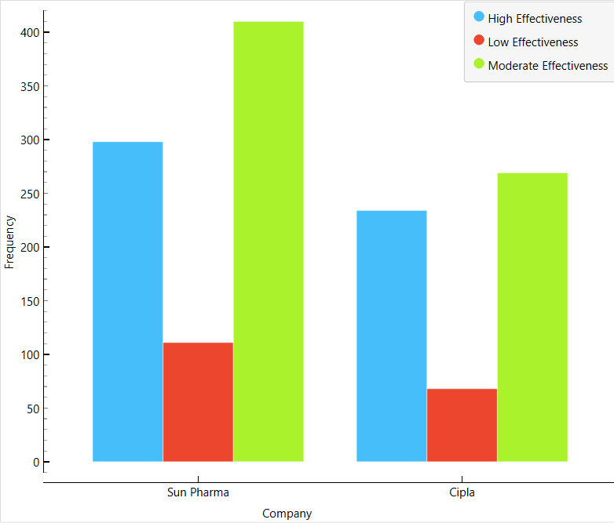

Medicine Effectiveness Analysis Using Data Mining and Machine Learning
DATA MINING · MACHINE LEARNING
An academic data mining and machine learning project analysing pharmaceutical medicine data to examine patterns in medicine effectiveness, with separate analyses for Sun Pharma and Cipla.
Project Overview
This project analyses pharmaceutical medicine data to examine medicine effectiveness using data mining, data visualisation, and machine learning techniques.
The analysis was conducted separately for Sun Pharma and Cipla and later compared to identify differences in medicine effectiveness across the two pharmaceutical companies.
Objectives
- Analyse the characteristics of pharmaceutical medicines.
- Create features from medicine composition, uses, and side effects.
- Classify medicines into High, Moderate, and Low Effectiveness.
- Explore patterns using data visualisation.
- Apply and compare machine learning algorithms.
- Compare medicine effectiveness between Sun Pharma and Cipla.
Dataset
The project uses pharmaceutical medicine data containing information on medicine composition, uses, side effects, manufacturers, and user review ratings.
The data was cleaned and transformed before analysis. Two company-specific datasets were prepared:
Data Processing
The cleaned datasets included features derived from medicine composition, uses, and side effects.
Effectiveness was classified into High Effectiveness, Moderate Effectiveness, and Low Effectiveness.
Data Visualisation
Visualisations were used to explore patterns in the pharmaceutical data and examine the distribution of medicine effectiveness.

Machine Learning Workflow in Orange Data Mining
The Orange workflow was used to prepare the pharmaceutical data,
define Effectiveness as the target variable, train multiple
classification models, and evaluate their predictive performance.
Random Forest, Naive Bayes, and k-Nearest Neighbours (kNN) were
compared using standard classification metrics.
Machine Learning
The machine learning analysis was performed using Orange Data Mining.
Three classification algorithms were evaluated:
Model performance was evaluated using measures including Accuracy, F1 Score, Precision, Recall, and AUC.
Orange Data Mining Workflow
Orange Data Mining was used to construct the machine learning workflow and evaluate the classification models.

Comparison of Classification Models for Sun Pharma
Random Forest demonstrated the strongest overall classification
performance for the Sun Pharma dataset. Its AUC of 0.856 indicates
a strong ability to distinguish between the three effectiveness
categories. With an accuracy of 69.4% and an F1 score of 0.685,
the model produced relatively consistent predictions. kNN performed
moderately, while Naive Bayes showed substantially weaker results.
Based on these results, Random Forest was selected as the most
suitable model for the Sun Pharma dataset and was subsequently used
for the cross-company analysis with Cipla.
Comparative Analysis
The analysis was performed separately for Sun Pharma and Cipla.
The two datasets were subsequently combined in Orange to compare their effectiveness distributions across High, Moderate, and Low Effectiveness categories.

Medicine Effectiveness Distribution: Sun Pharma vs Cipla
Moderate Effectiveness is the most frequent category for both
companies, suggesting that a large share of medicines falls within
this category. Sun Pharma has higher frequencies across all three
effectiveness categories. For both companies, High Effectiveness
is more frequent than Low Effectiveness. These differences may be
associated with variation in medicine composition, number of
ingredients, uses, and side effects. Differences in user review
ratings, which were used to derive the Effectiveness category, may
also contribute to the observed variation between the two companies.
Tools Used
Project Files
The project includes the following supporting materials:
- Project presentation
- Orange Data Mining workflow
- Google Colab notebook
Project Repository
The complete project files and documentation are available on GitHub.
View Project on GitHubDataset Source
The original pharmaceutical dataset was obtained from Kaggle: Aadyasingh55 — Drug Dataset.
Disclaimer
This project is an academic data mining and machine learning analysis. The effectiveness classification is based on the project's defined methodology and should not be interpreted as a clinical assessment of medicines.